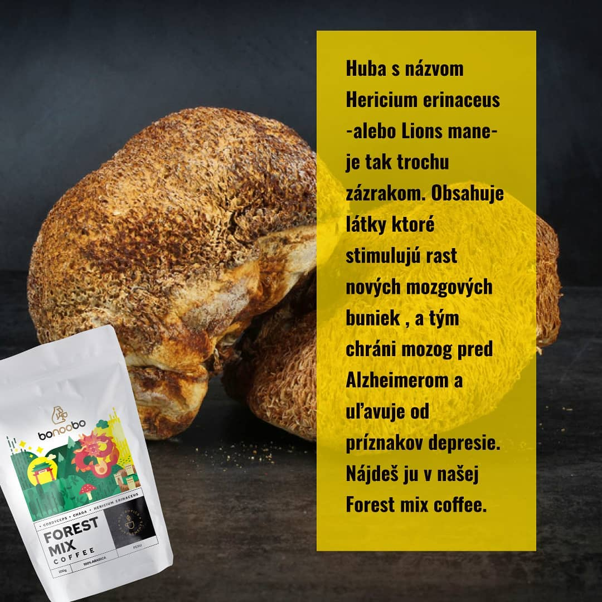

Huby podľa @bonoobo.eu — Normy Jedál
Mal by si sa starať o svoj mozog 🧠 aj keď sa cítiš psychicky fajn? Ja si myslím že určite - o 20 rokov už sa možno budeš cítiť inak. Je to spôsobené aj tým, že mozog sa nám časom "špiní" a "zanáša". Zápaly sa môžu dostávať aj do mozgu, a postupom času ho začína obaľovať tzv. Povlak beta amyloidu , ktorý neskôr môže vyústiť v choroby ako alzheimer. Okrem pravidelného cvičenia a najmä kvalitného rem spánku svojmu mozgu pomôžeš aj rôznymi potravinami a doplnkami výživy- akým je aj prášok z huby Hericium Erinaceus,alebo Lions mane - levia hriva 🦁 ide o veľmi unikátnu medicínsku hubu, ktorú nájdeš aj v našej novinke forest mix 🍄🌿 #bonoobocoffee #kavysveta #zdravoachutne #zdravastrava #zdravynapoj #zdravyzivotnystyl #mozog #biohackercommunity #lionsmanemushroom #huby #mushroomlove #chutne #horucinapoj